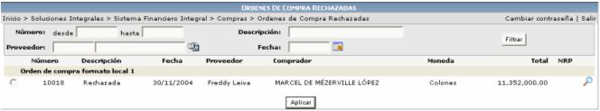
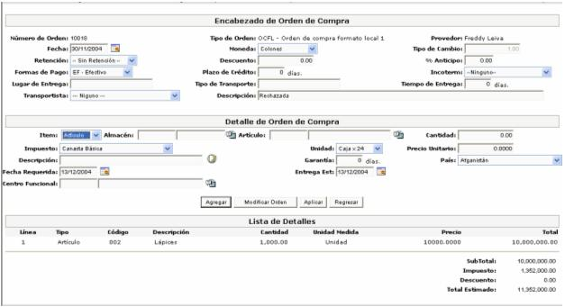
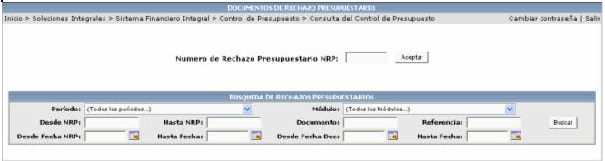

Este proceso permite reintentar la aplicación de órdenes de compra, que han sido rechazadas por presupuesto. El proceso podría recibir un nuevo rechazo o puede ser aceptado definitivamente, lo que implicaría que se realice el proceso de normal de una orden de compra.

Si se quiere ver el detalle de cada registro, solamente basta con hacer click sobre el registro deseado y se presentará la siguiente pantalla:

Al presionar este icono , el sistema presentará la pantalla de consulta de control
de presupuesto para que el usuario pueda buscar el documento de compra
rechazado y vea el estado de la orden y el detalle que generó el NRP (número
de rechazo presupuestario).
, el sistema presentará la pantalla de consulta de control
de presupuesto para que el usuario pueda buscar el documento de compra
rechazado y vea el estado de la orden y el detalle que generó el NRP (número
de rechazo presupuestario).
